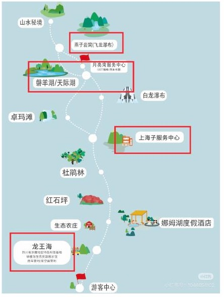
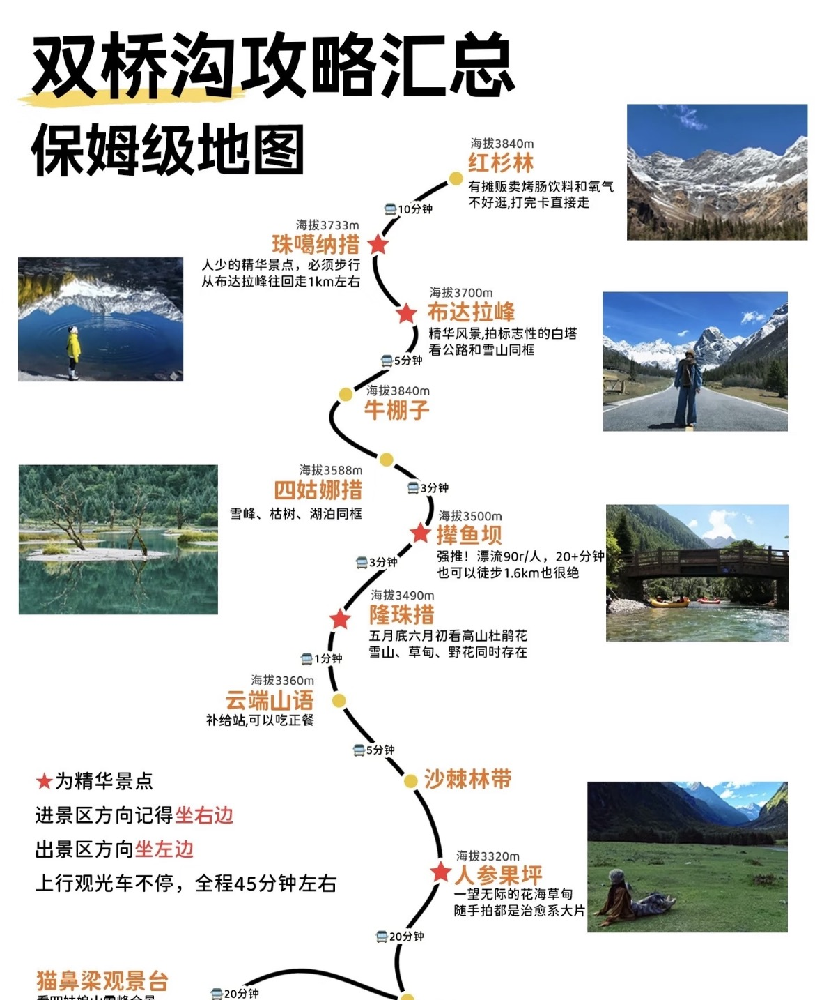
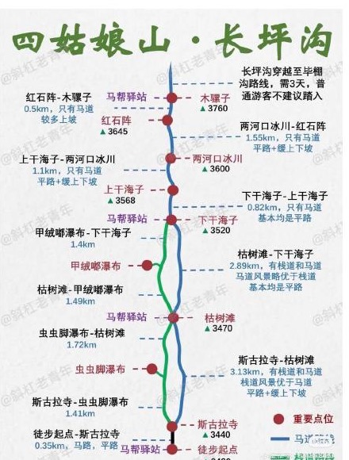
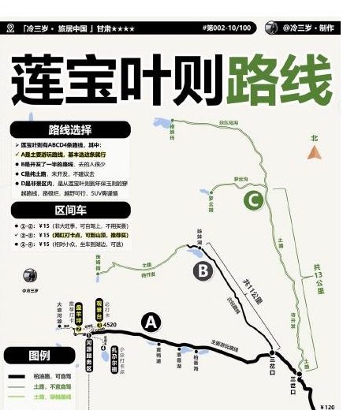
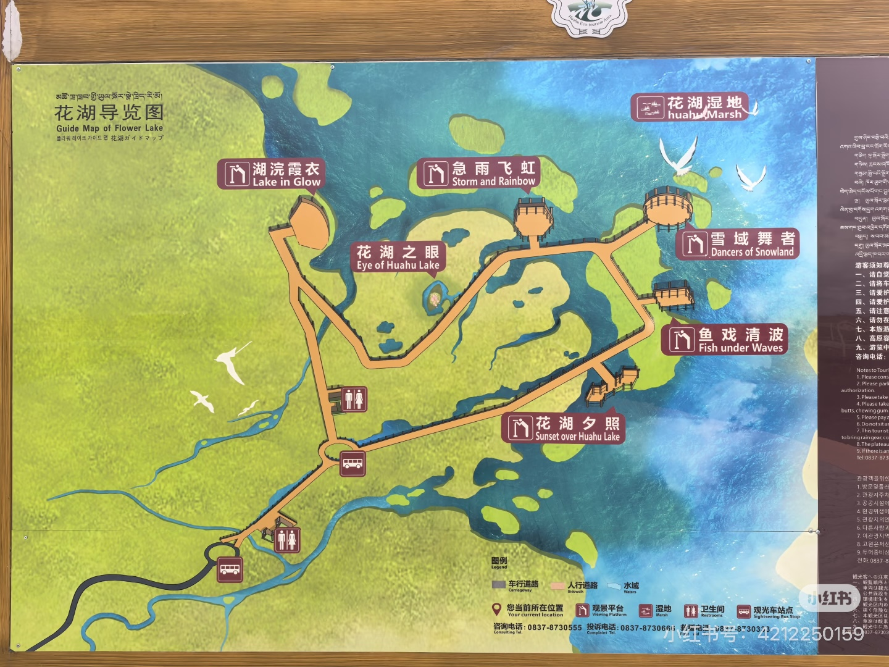
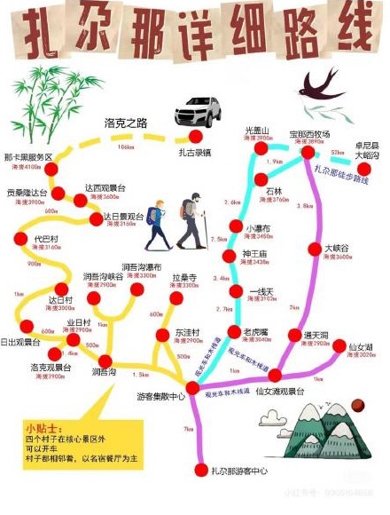
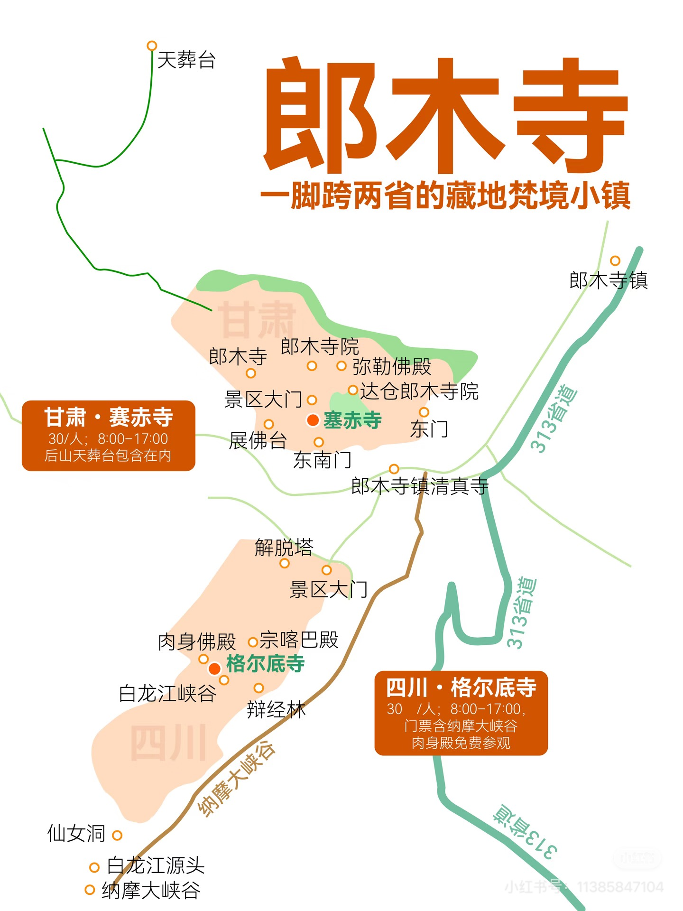

D1
9 月 25 日｜成都落地
- 23:30 落地，取行李、取车，来一顿老妈兔头，开到酒店后约 02:00 入住。
- 住宿：纯泊酒店（双流机场珠江路店）。
ROADBOOK · FINAL
以最终 PDF 为内容基线：成都落地取车，穿越川西北与甘南，兰州还车返京。
点按任意日期可跳至对应的细行程；住宿、出发时间和穿衣信息均按最终版整理。
毕棚沟、双桥沟、长坪沟按“少折返、保留精华”的路线走；D4 以长坪沟轻徒步和晚饭为固定安排。
大巴第一段。下车环湖一圈，再到龙王海上车点。
大巴第二段，十八弯易晕车，优先坐前排。
电瓶车第一段。磐羊湖没有上车点，需步行一小段到月亮湾。
轻徒步环湖，是本次保留的精华段。
电瓶车第二段，靠近雪山。
约爬坡 0.5 小时；不想爬就在燕子岩窝休息后，原路接电瓶车回上海子。

直接坐到沟顶红杉林，从上往下玩。观光车在各站间可换乘。
雪山、白塔与公路同框，优先拍照。
重点看雪峰倒影、枯木与湖面。
作为最后一站的开阔高山草甸。
漂流起终点，本次不去。

徒步起点；寺背后可看四姑娘山与经幡白塔同框。
本次徒步终点。栈道沿溪，清晰可见幺妹峰。
往返较陡。
下干海子、上干海子、两河口冰川方向不去：看不到四姑娘山，栈道结束后主要是马道。

9/29 是纯赶路日；莲宝叶则按自驾放行处理；10/1 年保外围只远观，11:00 门堂硬发车，16:15 抵黄河九曲；花湖离开后经红星镇、铁布镇进入扎尕那。
放行后连续两次分岔都向左，约 20 分钟到第一个景点。
由外至内，距离很近，可随停路边下车游览。
服务区购 ¥15 / 人往返观光车，下车步行游览。
继续开盘山路到盘羊坪停车场，购 ¥15 / 人往返观光车；若自驾限流，买河源 - 盘羊坪往返景交车 ¥15 / 人。
先顺时针参观；电梯直上 7 楼，看 7 / 8 / 9 楼珍宝与坛城，再走楼梯下至低层走廊近看弥勒佛。

观光车到湖区入口，沿 4.8km 单向环形木栈道徒步。海拔 3468m，全程平缓无陡坡。
远眺海子和草原，拍大场景。
晴好无风时的天空之镜点位。
清晨更易遇到黑颈鹤、赤麻鸭。
午餐后走“小独库”这一段；到酒店后说明只是过路可免费进入，不进景区停车场。

扎尕那按低到高的四村落组织；郎木寺先四川格尔底寺，后甘肃赛赤寺；最后从夏河经合作回兰州。
游客中心坐观光车；先沿栈道到较高处拍石城全景，再往草甸方向回走。
观光车回游客中心后步行到拉桑寺；在东洼 / 酒店附近午餐。
午后进入，带伞 / 雨衣；从左手边顺时针走，沿木栈道到瀑布即可返回。落石栈桥已塌。
达日看石城和远山；从达日向下行去洛克，含一段台阶，留 30 分钟；业日村看日落。

看五世活佛肉身舍利；平台可望甘肃寺金顶红墙。后山纳摩大峡谷轻徒步 1.5km，本次不作为必走项，也可骑马。
看金顶大殿；后山观景台可俯瞰郎木寺全景。
可开车上去，但参考 11 点关闭；要上去先问当日情况。

只收录最终 PDF 已确认的清单与穿衣原则，重点是高原低温、潮湿与续航。
| 日期 | 地点 / 天气 | 穿衣 |
|---|---|---|
| 9/25 | 成都 | 薄长袖 |
| 9/26 | 毕棚沟 · 16 - 26℃ · 🌧️ | 长袖 + 防水外层；雨具、备用干袜 |
| 9/27 | 理小路 / 双桥沟 · 16 - 26℃ · 🌧️ | 长袖 + 防水外层；景交车候车加层 |
| 9/28 | 长坪沟 · 14 - 26℃ · 🌧️ | 长袖 + 防水外层；防滑鞋 |
| 9/29 | 阿坝县 · 7 - 18℃ · 🌧️ | 保暖防水；垭口不久留 |
| 9/30 | 莲宝叶则 · 6 - 17℃ · 🌧️ | 长袖 + 加绒外套 + 防水外层 |
| 10/1 | 年保玉则 · -2 - 8℃ · ❄️ | 秋衣裤 + 抓绒 / 羽绒 + 防水外层；帽子、手套、暖贴 |
| 10/2 - 10/3 | 扎尕那 · 8 - 22℃ · 🌧️ | 早晚加层，雨衣优先 |
| 10/4 | 夏河 · 4 - 12℃ · 🌧️ | 保暖防水，帽子手套 |
| 10/5 | 拉卜楞寺 · 5 - 16℃ · 🌧️ | 长袖 + 保暖防水外层，厚袜 |
| 10/6 | 兰州 · 6 - 21℃ · 🌧️ | 分层 + 雨具 |